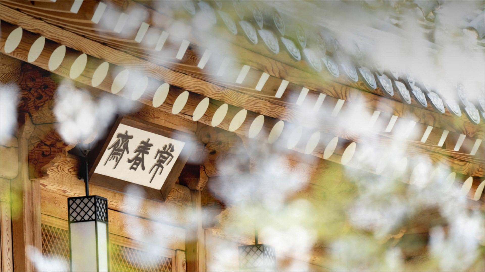
2022. 05. 10.
청와대 , 국민 품으로
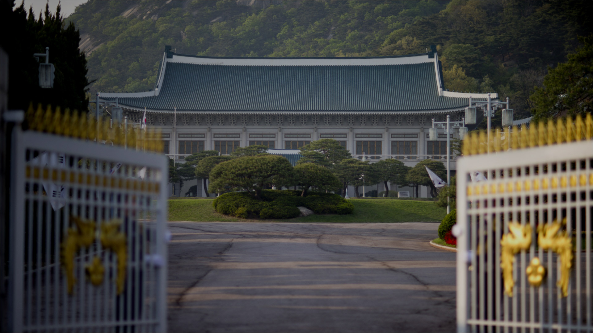
“청와대는 임기 시작인
5월10일에 개방하여
국민께돌려 드리겠습니다.”
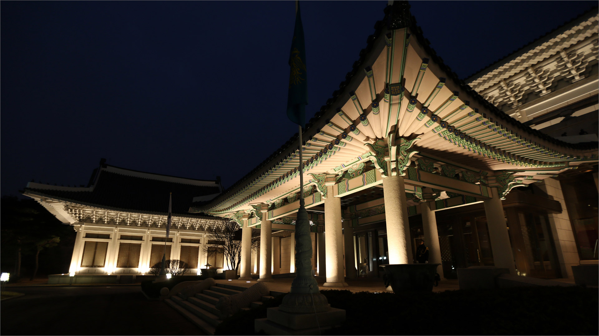
본관, 영빈관을 비롯하여..
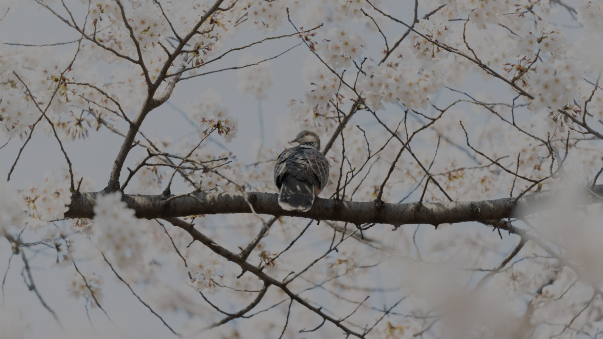
최고의 정원이라 불리는
녹지원과 상춘재를 모두
국민들의 품으로 돌려드리겠습니다.”
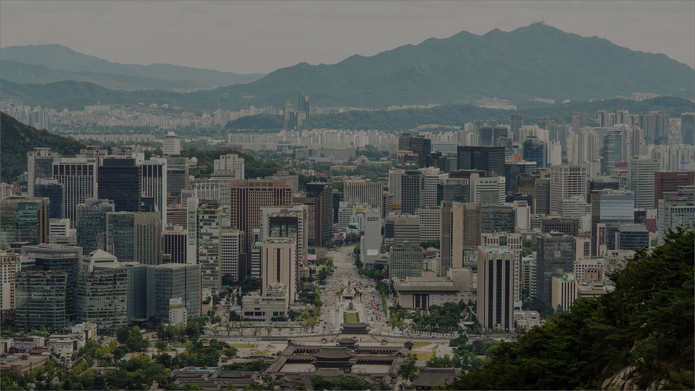
경복궁 지하철역에서 경복궁을 거쳐 청와대를 거쳐...
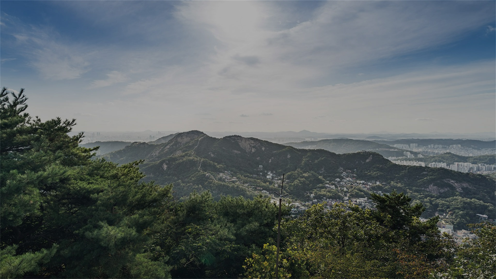
북악산으로의 등반로 역시 개방 되는것입니다.
약속 실천으로 시작합니다
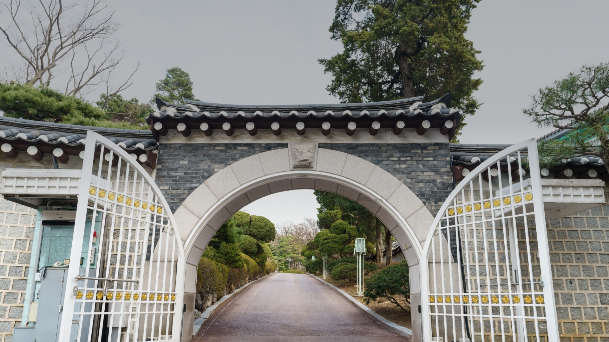
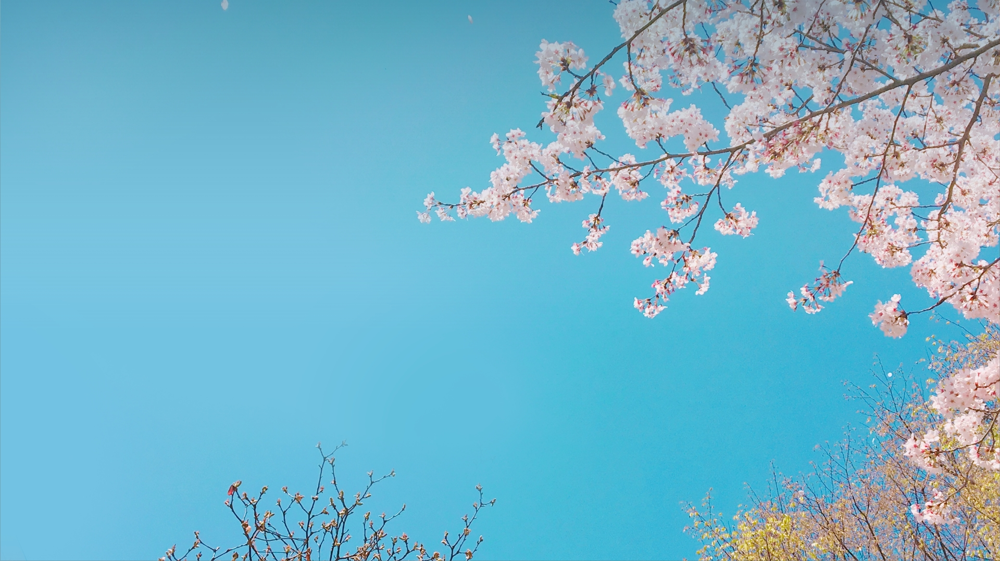
역사적인 청와대 개방을 기념하고 새시대를 여는 희망과 기쁨을 국민들과 함께 하기 위해 다양한 문화행사를 준비했습니다. 우리 아이들이 뛰노는 공원, 힘들 때 잠시 쉬어가는 휴식처, 청와대 꽃 길에서 여러분과 마주할 날을 기다립니다.
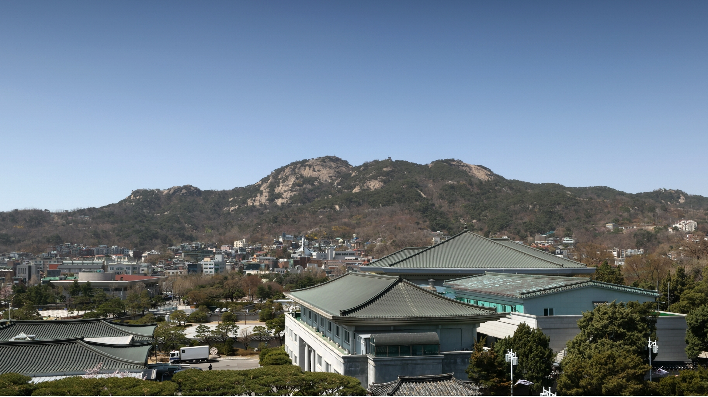
청와대의 완전한 개방으로 광화문에서부터 북악산까지
이어지는 길 위에서
때로는 느긋하게 산책하고 휴식하고, 때로는 역사와 문화를 탐방하시기 바랍니다.
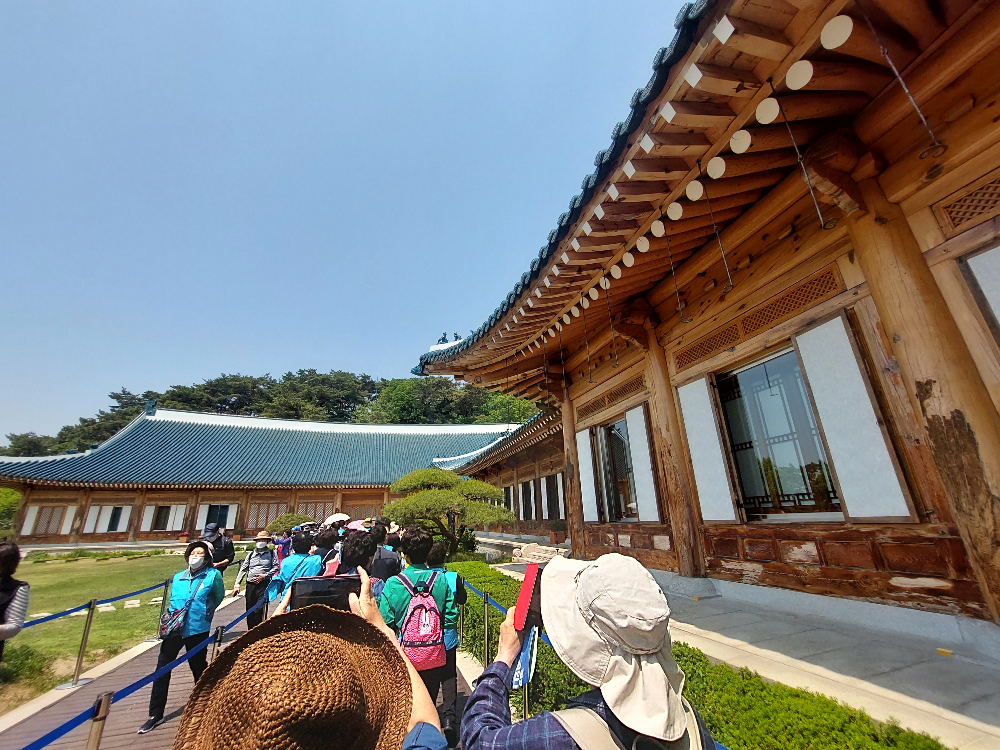
오래 살다 보니 청와대를 고궁처럼 구경 할 날도 오네요 갔던 날 날씨도 화장했고 공기도 좋아 청와대의 아름다움을 더 실감했습니다 조선시대 궁 보다 더 멋졌습니다 드 넓은 풀밭도 3개 정도 되는거 같은데 일단 2개만 그날 봤습니다 조그마한 계곡이 흐르는 곳도 있더군요 상상보다 훨씬 멋진곳이 였습니다 앞으로 내부도 공개 한다니 또 가 보려고 합니다 청와대를 국민 품에 돌려주신 윤석렬대통령께 감사드립니다 그동안 망쳐놓은 나라를 다시 회복 시켜 주세요 늘 응원합니다
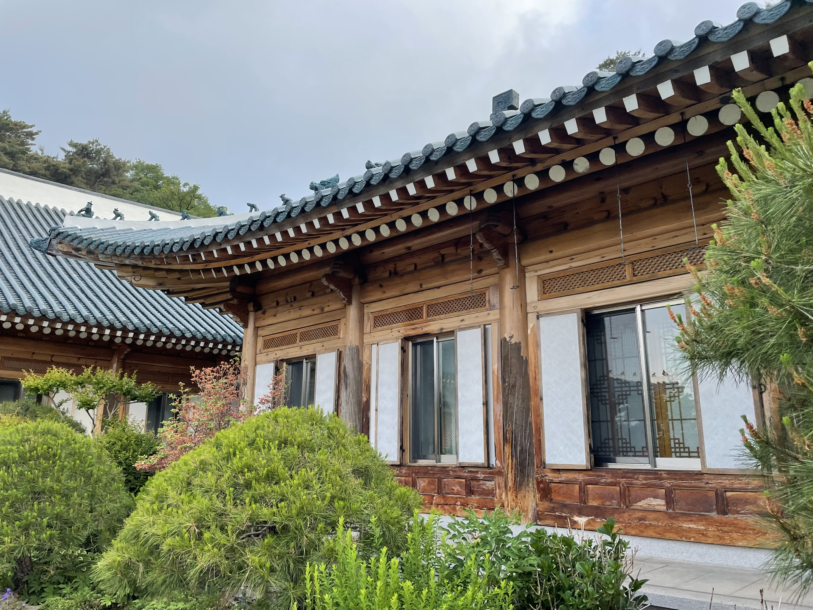
5월의 아침 코로나로 답답했던 국민에게 청와대 개방은 너무 소중한 힐링이었습니다. 이런 결정을 내린 새로운 정부 응원합니다. 너무 많은 인원입장이어서 걱정했는데 너무 넓고 광활하여 입장 후 여유롭게 가족들과 배포해준 안내도 맞춰 산책을 즐겼고 힐링하였습니다. 단지 입구에서 줄 정비하던 업체 안내하는 담담자 남자 한분이 너무 무례하게 소리치는 분 계셔서 해당업체에 주의 부탁드리며 입구 줄 세우고 관리하는 업체 좀더 신경써서 주심 감사하겠습니다. 그리고 미륵불 올라가는 곳 테크 많은 분이 다니셔서 보강하고 체크 부탁드립니다. 건물들 개방하실때 좀더 정비해주시고 과거에 일제의해 옮겨진 미륵불도 나쁜과거사를 기억할 수 있도록 미륵불도 현자리에 잘 유지 보존해 주세요. 건물 개방하면 또 놀러 가고 싶어요!!
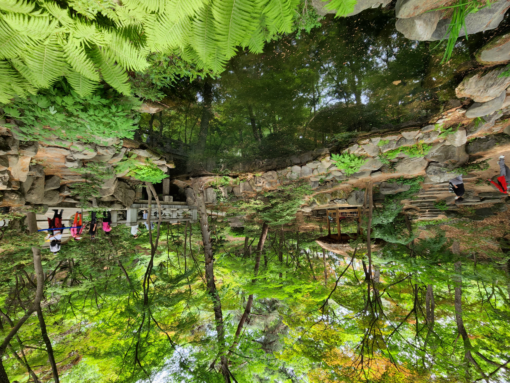
산책코스가 좋아요 청와대 경복궁 남산이 한장의 사진. 아름다운 서울 .
54년만에 일반인 개방된 북악산 청와대 뒷길을 갔다왔다 잘 정돈된 탐방로에 아름드리 숲속을 걷고 우리 민족의 역사가 고스란히 담긴 길을 걸으며 옛 조상들의 발자취와 숨소리를 느낄수 있었고 청와대 전망대에서 바라본 광화문 세종로 남산 에 이르는 전망은 숨이 막힐정도의 웅장함과 산새의 아름다움이 내가슴을 뛰게 했다 내려오는 길에 꽃길과 청와대 앞길 칠궁에 이르는 산책로도 좋았다 곳곳에 안내원이 탐방객들을 친절하게 안내해 주었고 부족한 화장실을 경찰차 화장실차가 지원을해주는 광경이 이색적이었다 한가지 청와대 춘추관 정문 칠궁에 이르는 곳에는 편의점이 없다 보니 기본적인 물이나 음료를 구할수가 없었고 잠시라도 앉아서 쉬려면 카페를 들어가야 하는 아쉬움이 있었다 그래도 총평은 아주 좋았고 우리명산 우리청와대를 세계적인 관광명소로 많은 사랑이 찾는 우리민족의 자랑이었으면 좋겠다
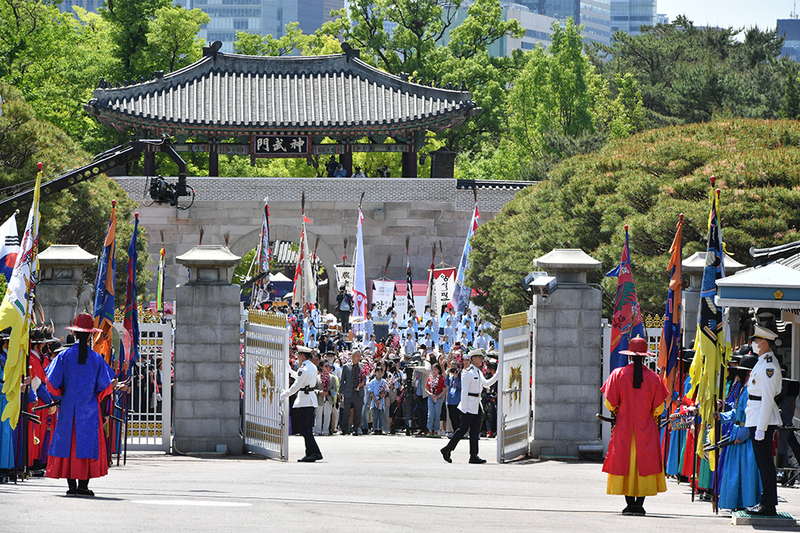
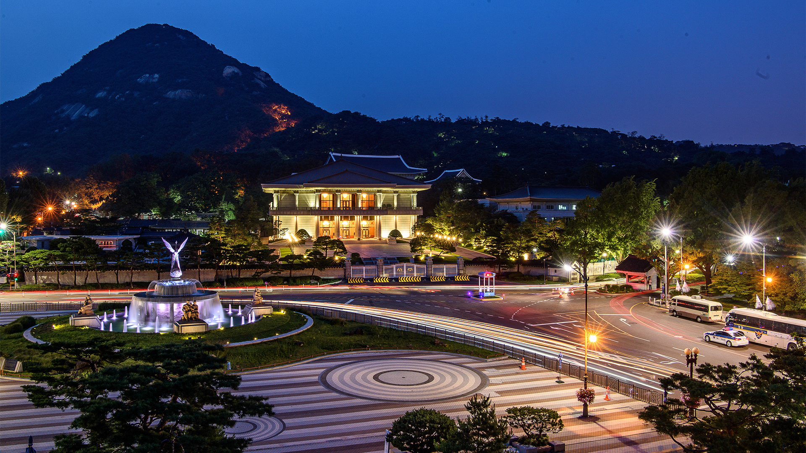
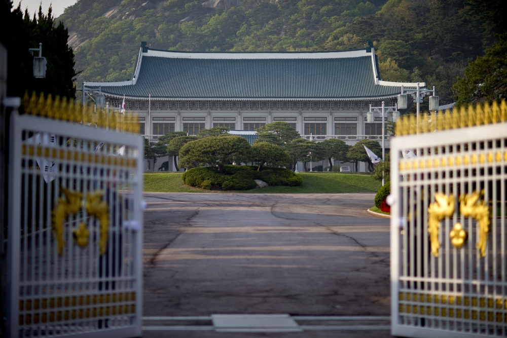
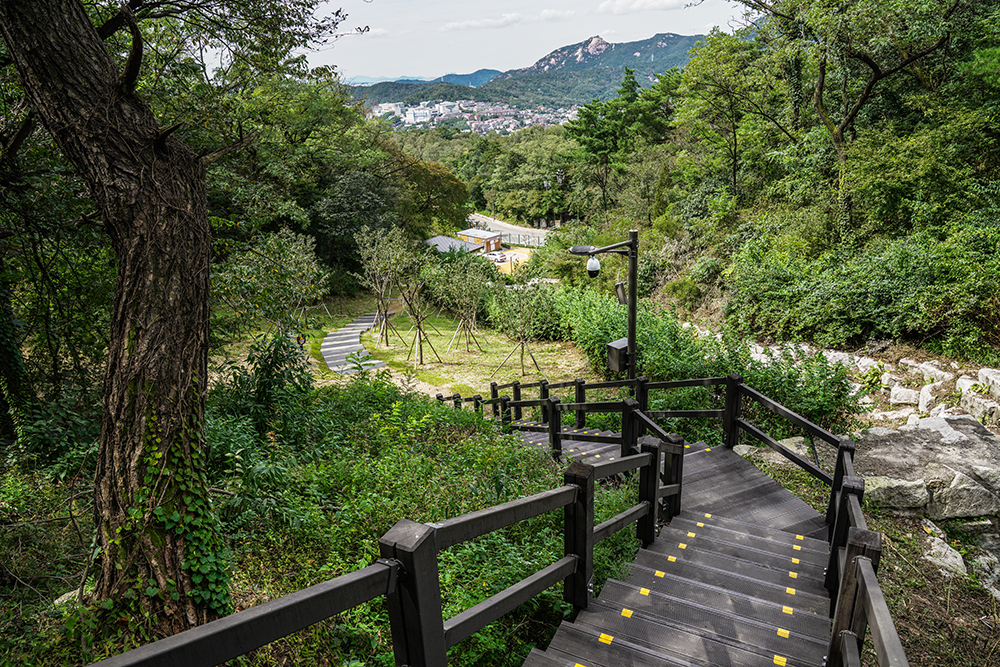
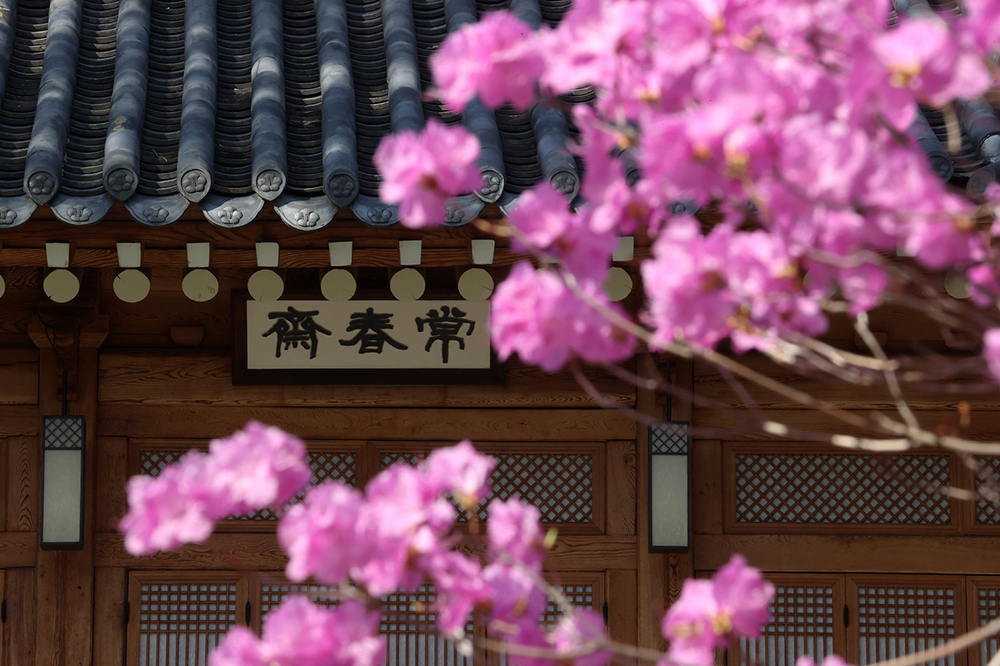
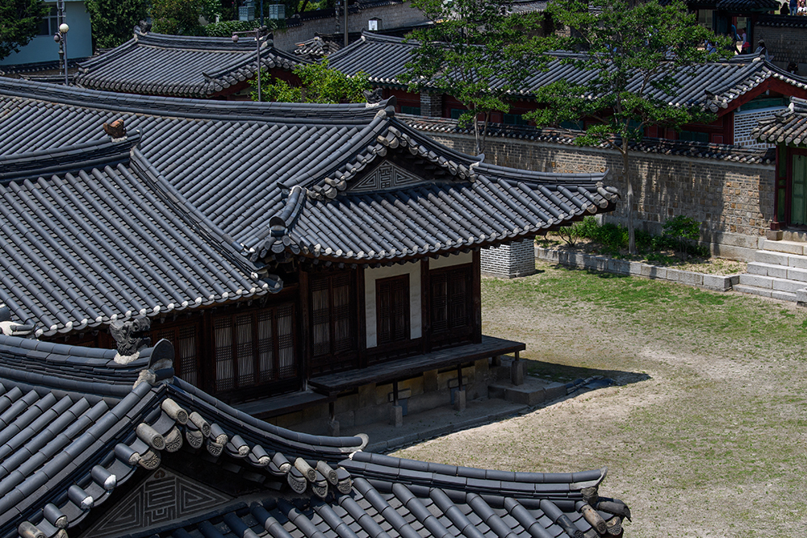
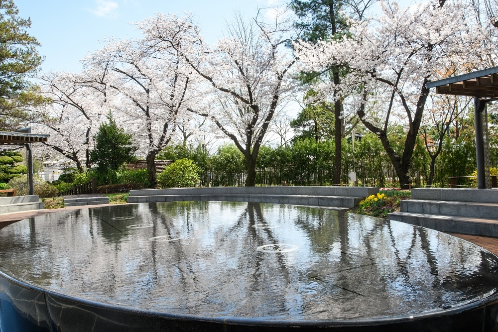
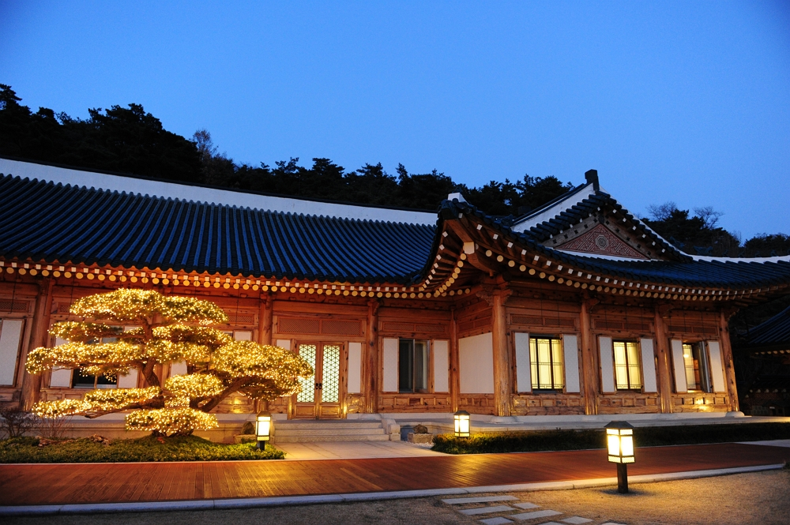
.jpg)
.jpg)
.jpg)
.jpg)
.jpg)